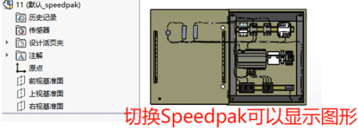

SOLIDWORKS Speedpak
制作
子装配体的speedpak是属于（派生）配置的一种，选择已配置右键-添加Speedpak；

方法1****：手动选择保留的面，可用于配合选择。

方法2****：快速包括：选择制作成speedpak的零部件

选项：
移除幻影图形：只显示 SpeedPak 配置中活动可用的面、实体、参考几何图形、草图和曲线。 其他所有面和实体则隐藏，这样便进一步减少了内存需求，从而提高了性能。
添加保存时重建标记：将保存时重建标记 应用到配置。 在下次保存文档时配置将生成其完整数据集。 每次当您保存文档时，都会重建和保存数据。

完成speedpak
判断speedpak完成的依据如下：
1、 图形有透明虚影；
2、 配置有speedpak图标
3、 设计树无特征信息

使用
使用子装配体的speedpak，这里是属于配置的一种，直接切换配置即可。

speedpak内存影响
特别对于不常编辑的零件或标准件，也可以使用【speedpak】功能，使其设置为不占性能的图像形式，（该功能可使装配体在打开后只显示其图像，保留在视觉上的信息，压缩其模型数据的大部分信息，来减少内存的占用）
下面是通过Speedpak测试对内存影响，本次测试数据：6000+零部件（独立零件1500个），总装文件大小：95.4MB。全部文件大小：1.07GB
还原模式
还原模式下的内存占用，电脑是几乎占满的状态（SW部分的占用约9GB）如图。还原模式下的零部件内存信息会被加载进内存，从而产生过多的内存占用的情况。该情况就可能会提示你“内存不足”或“内存耗尽”的弹窗提示。
单个Speedpak
对单个部件子装配体做图形Speedpak优化处理，该模式下的特征树列表的零件会被隐藏（不可编辑），只留下视图区域的图像显示。所以这部分的信息几乎不进内容。那么对于内存来说，占用就不会过高（如图从9GB减少至4GB内存占用）
全部Speedpak
对总装配体的所有部件进行全部Speedpak，此时的总装模型只有图形显示，其子装配体就不能编辑，这个模式下打开文件将变得非常的快（几乎和“大型装配体审阅”有的一拼）。如图的内存占用从9GB减少至2GB，大大减少内存的占用。
Speedpak优点
1、可以减少内存使用和快速装配体打开加载。
2、并且保留了图形后，即使没有零部件文件。切换到Speedpak也能显示模型的图像
这是切换到Speedpak模式下的装配体
Speedpak缺点
设计信息的优化是优点也是缺点，Speedpak这部分的优化，会造成选择和编辑上的不便。但这点也完全不影响设计内容。你需要按照下述操作即可。编辑和更新Speedpak的方法：对于需要编辑的零部件，我们可以打开需编辑的零部件。在做完编辑后，可在总装使用如下操作更新编辑：
方法1：【将Speedpak设定到父系】，来恢复部件的可编辑状态（这个命令会将部件内存加载进来）
方法2：【更新Speedpak子装配体】，这个会保持Speedpak模式，然后把修改后的零件更新到总装里（推荐用这个）
注意：
“将Speedpak设定到父系”将部件还原后，其内存信息会被加载进内存中。再编辑完成后换成Speedpak模式，其部件的内存信息还会保留。久而久之内存也是会增加上来。
总结
因此，在条件允许的情况下，我们建议可以是打开零件编辑的方式，再从总装使用“更新Speedpak子装配体”进行编辑修改的更新。
除此之外，我们还有关于大型装配体优化方案和标准件轻量化的实施经验，需要了解更多，可以联系智诚科技咨询更多内容。